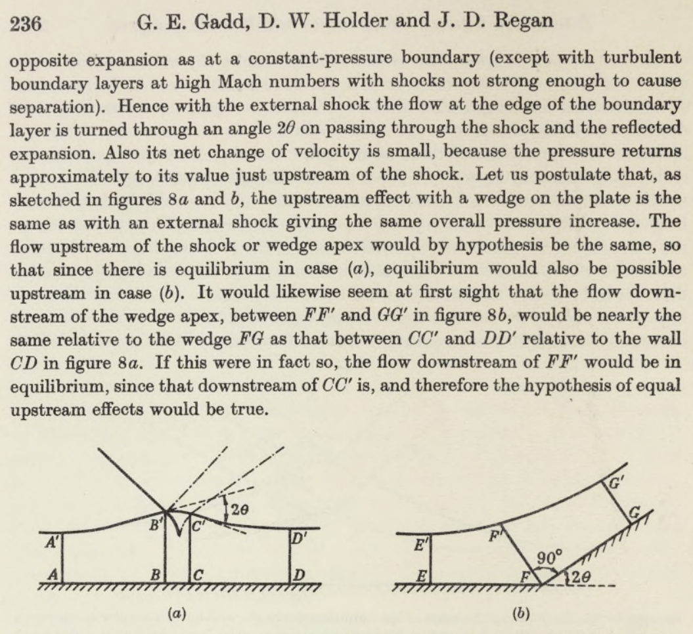
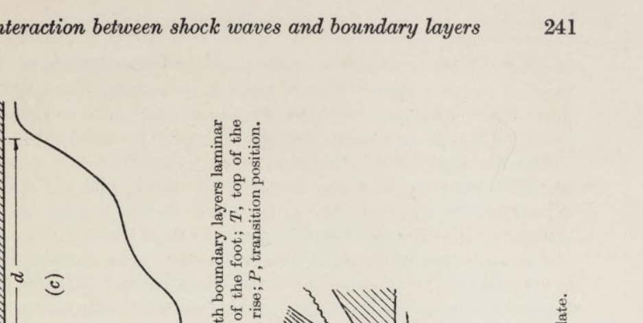
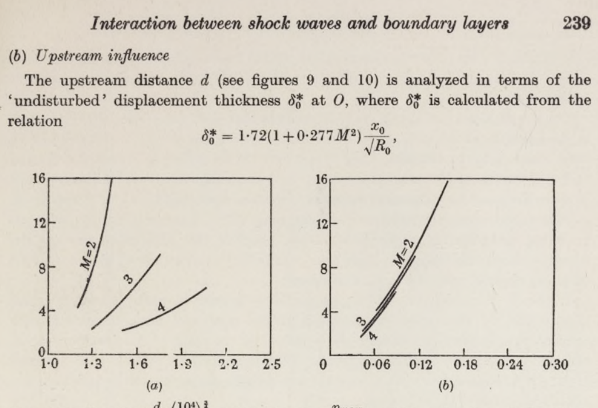
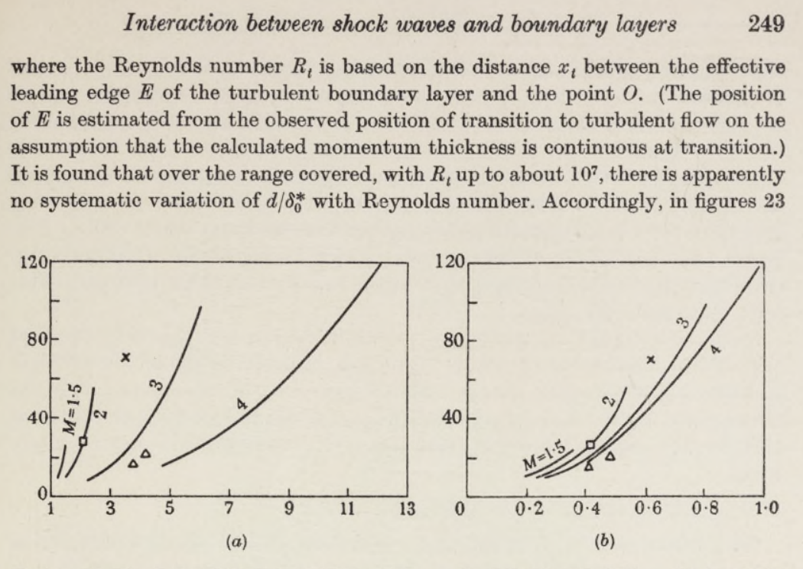

01中文摘要
在平板上实验研究激波与边界层的相互作用，激波可由超声速主流中的楔产生（外部激波），也可由贴在板面上的楔从边界层内部产生。试验覆盖较宽的来流马赫数、边界层雷诺数和激波强度范围，激波强度以下游与上游静压比定义。结果表明这些参数对干扰区影响很大，外部激波与板面楔两种产生方式之间差异显著；干扰的许多主要特征源于边界层在激波前发生分离，分离条件与分离后边界层行为可解释层流与湍流的差异。
原始摘要（英文/原文）
Abstract An account is given of an investigation into the interaction between the boundary layer on a flat plate and a shock wave produced either externally, by a wedge in the supersonic mainstream, or from within the boundary layer, by a wedge held in contact with the plate. A wide range of free-stream Mach numbers, boundary-layer Reynolds numbers, and shock strengths has been covered, shock strength being defined as the ratio of the static pressure downstream of the shock to the static pressure upstream of it. Variations in these parameters can have large effects on the interaction, and there are also large differences between cases with externally generated shocks and cases where the shock is generated from within the boundary layer. The investigation has thrown light on the physical mechanisms involved. It is found that many of the major features of the interaction arise because the boundary layer separates from the surface ahead of the shock wave.The conditions under which separation occurs and the behaviour of the separated boundary layer thus have important effects, in terms of which, for example, the differences between the interactions observed with laminar and with turbulent boundary layers may be explained.
02阅读说明
文章类型：实验研究（风洞实验，兼有现象学分析）。材料范围：全文29页（刊页227–253，含Plates 3/4两页图版），摘要、符号表、4节正文、结论与参考文献齐全。图表可读性：扫描OCR质量中等，公式、图注及部分数字有乱码；位移厚度公式、Cp定义、分离压比与上游影响图已回原PDF第239、245、248、249页核对。信息完整度：工况、测量技术与现象描述完整，但无形式化不确定度分析，速度剖面仅少量测量。提取口径：只依据本bundle文本、图注及上述PDF核对页，未引外部资料。 文章类型：期刊
03一句话核心与三句话摘要
平板边界层-激波干扰实验表明，分离与转捩位置决定干扰类型，外激波上游影响远大于板上楔。
- 激波与边界层干扰使实际流场明显偏离无粘规则反射，层流与湍流边界层的干扰差异很大，而此前实验的参数范围较窄，且很少在同一设备上系统比较外激波与板上楔两种激波。 AI概括
- 作者在2.6×1.5 in.与11×11 in.风洞中，以M=1.5–4、宽范围边界层雷诺数与激波强度，对平板边界层开展纹影/阴影、壁面静压、表面管与樟脑升华测量。 AI概括
- 结果表明分离与转捩位置决定干扰类型；层流边界层远比湍流易分离；同一总压升下外激波的上游影响远大于板上楔；分离压比只取决于马赫数与雷诺数，与诱发分离的方式无关。 原文明确
04核心内容清单
| 要点 | 类型 | 重要性 | 原文依据 | 属性 |
|---|---|---|---|---|
| 实验揭示三类干扰：全层流；分离时为层流、再附前转捩；转捩发生在干扰区上游（全湍流）。 | 分类框架 | A | PDF第28页/刊页252；§4 | 原文明确 |
| 分离点位于诱发装置上游；边界层增厚产生压缩波，压缩波又控制增厚率，两者平衡使分离压比只取决于M与Re，与诱发分离的具体装置无关。 | 机制 | A | PDF第10页/刊页234；§3.1 | 原文明确 |
| 外激波在边界层处局部反射为膨胀波（弱激波+高M湍流除外），因为近壁亚声速流体不能承受陡峭压升，局部表现为恒压边界。 | 机制 | A | PDF第10页/刊页234；PDF第22页/刊页246 | 原文明确 |
| 全层流：弱激波不分离，压力分布单拐点；较强激波分离，出现三拐点的层流foot。 | 压力分布 | A | PDF第14页/刊页238；图9、图10 | 原文明确 |
| 分离时层流、再附前转捩：通常三拐点；强外激波且转捩远在激波上游时可出现五拐点，foot在转捩处结束。 | 压力分布 | A | PDF第16–18页/刊页240–242；图13、图14 | 原文明确 |
| 全湍流：外激波偏折角小于约5–6°或板上楔小于约10–12°不分离；强激波分离后压力分布出现kink压力pk，pk略高于分离压比。 | 分离判据与压力分布 | A | PDF第22页/刊页246；PDF第26页/刊页250；图20、图21、图25 | 原文明确 |
| 层流上游影响d/δ*₀近似随R₀^(1/2)增长；给定压比时高M的上游影响小得多，但给定压比系数时对M依赖不大。 | 标度律 | A | PDF第15–16页/刊页239–240；图11、图12 | 原文明确 |
| 全湍流上游影响在R_t约达10⁷范围内无系统Re变化，d/δ*₀只是激波强度与M的函数；给定压比时高M影响更小，给定Cp时M差异较小。 | 标度律 | A | PDF第25页/刊页249；图23、图24 | 原文明确 |
| 层流分离压比在M=2、3、4约为1.14、1.14、1.33；湍流分离压比大致相当于5–6°激波或10–12°板上楔产生的压比。 | 定量判据 | A | PDF第21页/刊页245；PDF第26页/刊页250 | 原文明确 |
| 分离湍流边界层所需压升约为层流的5倍；湍流分离区回流Mach数约0.4，而层流分离区回流速度小到无法测量。 | 层流/湍流差异 | A | PDF第24页/刊页248 | 原文明确 |
| 同一总压升下外激波的上游影响远大于板上楔；作者归因于外激波在近壁低速层内的局部效应，但承认证据不足，需更多剖面测量。 | 核心发现与解释 | A | PDF第11–13页/刊页235–237；PDF第28页/刊页252 | 原文明确 |
| 转捩位置受风洞湍流度与侧壁边界层污染影响，小风洞转捩Re约1×10⁶；作者认为图15–18的结果不宜直接外推到其他风洞或自由飞，但总体趋势可能相似。 | 局限 | B | PDF第20页/刊页244 | 原文明确 |
05引言：研究问题与领域缺口
【原文明确】引言从机翼绕流、发动机进气道与风洞扩压器中的激波-边界层干扰出发，指出实际流型可能与无粘预期（规则反射）完全不同（图1，PDF第2页/刊页228）。历史脉络为：Ferri(1939)首先注意到超音速风洞中翼型后缘附近的边界层分离；1945年前后英国Fage & Sargent、瑞士Ackeret等、美国Donaldson、Liepmann等分别开展研究，发现干扰性质强烈依赖边界层状态（PDF第2–3页/刊页228–229）。【AI概括】作者指出现有曲面实验难以把干扰效应与曲率、局部超音速区范围的影响分开，因此近期实验多采用纯超音速平板或轴对称体；但已有实验的M、Re与激波强度范围有限，外激波与板上楔两种激波也缺少系统对比。本文目标是在平板上独立改变这三个参数，重点给出壁面压力分布、流型以及分离区范围。
06流动条件与几何构型
| 项目 | 数值/描述 | 依据 | 备注 |
|---|---|---|---|
| 主风洞工作段 | 宽1.5 in.×高2.6 in.；玻璃侧壁；下游接抽吸泵，上游接干燥压缩空气 | PDF第4页/刊页230 | 试验段尺寸原文为1.5 in. wide、2.6 in. high |
| 试验平板 | 长6 in.，全跨风洞；中心线布置静压孔；前缘A处经旁路形成新边界层 | PDF第4页/刊页230 | 洞壁边界层经平板下方旁路排走 |
| 马赫数范围 | M=1.5、2、3、4（更换喷管） | PDF第4页/刊页230 | 各M对应不同喷管 |
| M=2时的雷诺数范围 | 总压可调至15 atm绝对；Re约1.7×10⁵–5×10⁶ 每英寸 | PDF第4页/刊页230 | 总压下限OCR缺失（原文“betw ? and 15 atm”），受限于材料无法确认 |
| 外激波产生方式 | 主流中全跨楔C，可轴向移动；M=4时楔顶角可达20°，M=2时最大偏折角约10° | PDF第4页/刊页230 | 低M更易堵塞；楔不能过短，以免后缘膨胀波干扰 |
| 板上楔产生方式 | 全跨楔D贴于平板，可纵向移动；斜面布置静压孔；产生相同压升所需角度约为外激波楔的两倍 | PDF第4–5页/刊页230–231 | 原文称角度可接近外激波楔的两倍 |
| 11×11 in.复核风洞 | M=2.5；外激波偏折角12°；板上楔24°；干扰区距平板前缘约4.5 in.；平板与楔宽11 in. | PDF第9页/刊页233 | 用于排除2.6×1.5 in.风洞侧壁边界层干扰 |
| 11×11 in.风洞总压与人工转捩 | 最大总压约1 atm；前缘附近一排直径约0.2 in.、间距0.1 in.的孔，吹气强迫转捩 | PDF第26页/刊页250 | 因总压不足以自然达到高Re |
| 洞壁边界层对照实验 | 2.6×1.5 in.风洞侧壁/洞壁边界层，较厚 | PDF第6页/刊页232 | 仅用于校核，不用于细节研究 |
| 表面管几何 | 高度h约0.005 in.，千分尺可调 | PDF第6页/刊页232；图3 | 用于判断分离与再附 |
| 纹影/阴影光源 | 火花光源约1 μs；机械快门长曝光（曝光时间OCR缺失） | PDF第6页/刊页232 | 长曝光具体数值受限于材料无法确认 |
| 转捩测量 | 樟脑薄层升华法；测量时移去激波楔及其支杆 | PDF第6页/刊页232 | 利用层流/湍流升华速率差异 |
| 层流分离压比测量范围 | R₀=2×10⁵–4×10⁵；M=2、3、4 | PDF第21页/刊页245 | 表面管测量，层流回流很弱，精度有限 |
| 全湍流上游影响Re范围 | R_t至约10⁷ | PDF第25页/刊页249 | d/δ*₀无系统Re变化 |
| 边界层状态 | 全层流；分离时层流、再附前转捩；干扰区上游已转捩（全湍流） | PDF第28页/刊页252 | 由Re、激波偏折角及风洞环境共同决定 |
| 其他流场条件 | 平板零压力梯度来流；平板全跨风洞；侧壁存在边界层 | PDF第4页/刊页230 | 三维/侧壁效应通过11×11 in.风洞复核 |
07核心现象与关键参数
| 参数 | 定义 | 数值 | 关系/说明 | 依据 |
|---|---|---|---|---|
| d | 从0点（干扰区上游压力开始上升处）量起的上游距离 | 随激波强度、M、Re变化；以d/δ*₀归一化 | 层流d/δ*₀≈f(激波强度,M)·R₀^(1/2)；湍流d/δ*₀≈f(激波强度,M) | PDF第15页/刊页239；符号表PDF第1页/刊页227 |
| δ*₀（层流） | 0点处“未受扰动”边界层位移厚度，由经验式计算 | δ*₀=1.72(1+0.277M²)x₀/√R₀ | R₀以x₀为特征长度 | PDF第15页/刊页239 |
| δ*₀（湍流） | 0点处“未受扰动”湍流边界层位移厚度 | δ*₀=0.0475(1+0.35M²)/[1+0.88((γ−1)/2)M²]^0.44·x_t/R_t^(1/5) | R_t以x_t为特征长度；转捩点处动量厚度连续 | PDF第24页/刊页248 |
| R₀、R_t | 分别以x₀、x_t为特征长度、取来流速度与运动学粘度的雷诺数 | 层流分离压比测量R₀=2×10⁵–4×10⁵；湍流R_t至约10⁷ | x_t为湍流边界层有效前缘E到0点的距离 | PDF第15页/刊页239；PDF第25页/刊页249；符号表 |
| Cp | 压力系数 | Cp=(2/γM²)(p/p₁−1)，γ=1.4 | 用于把压比换算为压力系数；峰值记作Cp,max | PDF第15页/刊页239；符号表 |
| pmax/p₁ | 干扰区壁面峰值静压与来流静压之比（激波强度） | 随工况变化；图中作为横坐标 | 与Cp,max可互相换算 | 符号表；图11、图23 |
| ps/p₁ | 分离点壁面静压与来流静压之比 | 层流M=2、3、4约1.14、1.14、1.33 | 只依赖M与Re，与诱发方式无关；湍流约相当于5–6°激波或10–12°板楔的压比 | PDF第21页/刊页245；PDF第26页/刊页250 |
| pk/p₁ | 湍流分离压力分布中kink处的压比，取最大与最小斜率切线交点 | 略高于ps/p₁；随M增大、Re增大而减小（高M低Re更明显） | pk由压力分布几何定义，比ps易测 | PDF第26页/刊页250；图20、图25 |
| 分离判据（层流） | 不分离的激波偏折角上限 | 外激波约2°，板上楔约4° | 超过则出现层流分离与foot | PDF第14页/刊页238 |
| 分离判据（湍流） | 不分离的激波偏折角上限 | 外激波约5–6°，板上楔约10–12° | 与ps/p₁的工作经验一致 | PDF第22页/刊页246；PDF第26页/刊页250 |
| 湍流/层流分离压升比 | 分离湍流边界层所需压升与分离层流所需压升之比 | 约5倍 | 解释两类干扰压力量级差异 | PDF第24页/刊页248 |
| 分离区回流Mach数 | 用反置皮托管测得的分离区回流速度对应的Mach数 | 湍流、M=3强外激波时约0.4；层流分离区测不到回流 | 说明湍流dead-air区存在较强涡 | PDF第24页/刊页248 |
| 层流foot长度l | 层流foot的流向长度（图13、图14） | 以l/δ*₀表示，随R₀变化；数据点在转捩位于激波上游时坍缩为一条曲线 | foot终点为转捩位置或激波/楔尖位置 | PDF第19–20页/刊页243–244；图18 |
| 转捩雷诺数 | 小风洞中自然转捩对应的雷诺数 | 约1×10⁶（各Mach数大致相同） | 受风洞湍流度与侧壁污染影响，自由飞可能更高 | PDF第20页/刊页244 |
08方法与数据
【原文明确】主风洞工作段宽1.5 in.、高2.6 in.，玻璃侧壁可拍照；平板长6 in.并横跨风洞，前缘A处通过旁路排除洞壁边界层，形成新的试验边界层，平板中心线布置静压孔（PDF第4页/刊页230）。激波有两种产生方式：主流中的楔C（多数全跨、可轴向移动，用移动楔等效细分压力分布）与贴在平板上的楔D（全跨、可移动，斜面布置静压孔）（PDF第4页/刊页230）。M通过更换喷管改为1.5、2、3、4；总压由阀门控制以独立改变Re（PDF第4页/刊页230）。测量包括：约1 μs火花光源的纹影与直接阴影、机械快门长曝光、樟脑升华判断转捩位置、表面管（半皮托）判断分离（PDF第6页/刊页232）。另在11×11 in.连续风洞以M=2.5复核侧壁干扰（PDF第9页/刊页233）。【AI概括】数据处理把上游距离d用过0点的“未受扰动”位移厚度δ*₀归一化，层流与湍流分别采用经验关系式（见derivation）。
| 项目 | 内容 | 依据 | 备注 |
|---|---|---|---|
| 实验设备 | 2.6×1.5 in.吸气式超音速风洞（主设备）＋11×11 in.连续风洞（复核） | PDF第4页/刊页230；PDF第9页/刊页233 | 主风洞玻璃侧壁可拍照 |
| 参数独立变化 | 更换喷管改M；调总压改Re；更换楔角改激波强度；移动楔改激波相对平板位置 | PDF第4页/刊页230 | 设计目的即独立改变三参数 |
| 激波产生 | 外激波：主流中的全跨楔；板上激波：贴在平板上的全跨楔 | PDF第4页/刊页230 | 板上楔斜面布置静压孔 |
| 壁面压力测量 | 平板中心线静压孔；移动楔使压力分布相对测点平移，等效加密测点；板上楔斜面亦测压 | PDF第4页/刊页230 | 原文强调小距离移动时压力分布不变 |
| 流场显示 | 纹影与直接阴影；约1 μs火花光源；机械快门长曝光 | PDF第6页/刊页232 | 图4、5、7、22等 |
| 分离检测 | 表面管（半皮托）：未分离时读数高于静压，分离时等于或略低于静压（回流） | PDF第6页/刊页232；图3、图19 | h约0.005 in. |
| 转捩检测 | 樟脑薄层升华法；移去楔与支杆后测量 | PDF第6页/刊页232 | 利用层流/湍流升华速率差异 |
| 速度剖面 | 少量测量，集中于M=3强外激波工况；因设备尺度小、激波附近压力与方向变化大而困难 | PDF第24页/刊页248 | 未给出系统剖面数据 |
| 侧壁干扰复核 | 11×11 in.风洞M=2.5试验；人工转捩；与主风洞结果对比 | PDF第9页/刊页233；PDF第26页/刊页250 | 结论为全湍流干扰无显著侧壁干扰 |
| 数据归一化 | 用0点未扰动位移厚度δ*₀归一化上游距离d；层流/湍流分别用经验式 | PDF第15页/刊页239；PDF第24页/刊页248 | 层流式来自Young(1949)，湍流式来自Monaghan & Johnson(1949)、Monaghan(1950) |
| 理论与实验对比 | 与Tsien & Finston、Lighthill、Lees、Ritter & Kuo、Gadd、Donaldson & Lange、Tyler & Shapiro等理论/经验比较 | PDF第10页/刊页234；PDF第16页/刊页240；PDF第26–27页/刊页250–251 | 仅比较趋势与量级，未做定量确认 |
| 不确定度分析 | 文中未给出形式化不确定度、重复性或误差棒 | 全文 | 仅讨论层流分离压比测量困难与数据散布 |
09核心推导与公式
原文未给出从守恒律出发的完整解析推导；以下仅列出材料中可核对的定义或建模链，不补写教科书推导。
本文为实验研究，未建立理论模型或给出数学推导。文中的“推导性”内容仅为：用经验关系式计算未扰动位移厚度δ*₀、定义无量纲上游影响参数与压力系数，以及用dead-air区厚度与摩擦力平衡作现象学论证。下列steps为原文公式/定义陈述，不是推导步骤。
关键假设
- 0点上游边界层可视为未受扰动，其位移厚度可由平板经验关系给出（PDF第15页/刊页239；PDF第24页/刊页248）
- 转捩点处动量厚度连续，用以确定湍流边界层有效前缘E（PDF第25页/刊页249）
- dead-air区定义为厚度t处净质量流量为零（PDF第13页/刊页237脚注）
- 分离点位置与诱发方式无关，只由上游边界层条件决定（PDF第10页/刊页234）
推导过程
层流上游影响用0点未扰动位移厚度归一化；δ*₀由Young(1949)的经验式计算，R₀以x₀为特征长度。原式无编号。
原文把d/δ*₀乘以(10⁴/R₀)^(1/2)后作图，使不同Re的数据归并；该参数只是激波强度与来流Mach数的函数。
峰值压比与峰值压力系数可互换，γ取1.4。原式无编号。
湍流上游影响用另一经验式计算δ*₀；R_t以有效前缘E到0点的距离x_t为特征长度，E的位置按转捩处动量厚度连续确定。
dead-air区定义为厚度t处净质量流量为零；区内近壁回流、外层前流，速度很小但不为零。
适用边界：经验式仅适用于零压力梯度平板边界层；转捩位置受风洞环境强烈影响，δ*₀与d/δ*₀的可迁移性有限（PDF第20页/刊页244）；现象学论证未给出定量模型。
10结果：主要发现与关键证据
【原文明确】实验揭示三类干扰：边界层在全干扰区保持层流；分离时为层流但在再附前转捩；转捩发生在干扰区上游（PDF第28页/刊页252）。全层流时，弱激波（外激波偏折角小于约2°、板上楔小于约4°）不分离，壁面压力分布只有一个拐点；较强激波出现分离，压力分布呈三拐点的“foot”（PDF第14页/刊页238）。分离时层流、再附前转捩时，转捩位置相对激波或楔尖决定压力分布：通常为三拐点，强外激波下转捩远在激波上游时可出现五拐点（PDF第16–18页/刊页240–242）。全湍流时，外激波偏折角小于约5–6°或板上楔小于约10–12°不分离；更强激波产生明显分离，压力分布在分离后梯度下降、再附后再次下降，并出现kink压力pk（PDF第22–26页/刊页246–250）。上游影响方面，层流d/δ*₀近似随R₀^(1/2)增长（PDF第15页/刊页239）；湍流在R_t约达10⁷范围内d/δ*₀无系统Re变化，仅是激波强度与M的函数（PDF第25页/刊页249）。层流分离压比在M=2、3、4约为1.14、1.14、1.33（PDF第21页/刊页245）。
| 发现 | 证据 | 证据类型 | 强度 | 位置 | 属性 |
|---|---|---|---|---|---|
| 干扰可分为三类：全层流、分离时层流但再附前转捩、干扰区上游已转捩；决定类型的主要因素是边界层Re、激波偏折角，以及风洞侧壁邻近程度、湍流度和杂散压力梯度。 | 图4、图5的纹影与压力分布；11×11 in.与2.6×1.5 in.风洞对比；结论第1段 | 分类与参数研究 | 强 | PDF第28页/刊页252；PDF第9页/刊页233 | 原文明确 |
| 层流边界层比湍流边界层易分离得多；分离湍流边界层所需压升约为层流的5倍。 | 层流不分离阈值约2°/4°，湍流约5–6°/10–12°；正文明确给出5倍关系 | 定量对比 | 强 | PDF第14页/刊页238；PDF第22页/刊页246；PDF第24页/刊页248 | 原文明确 |
| 同一上游边界层条件、同一总压升下，外激波的上游影响远大于板上楔。 | 图7、图8的对比；图11/12与图23/24分别给出的d/δ*₀曲线；结论第3段 | 实验对比 | 强 | PDF第11页/刊页235；PDF第28页/刊页252 | 原文明确 |
| 分离压比与诱发分离的装置无关，只取决于M与Re；层流M=2、3、4约为1.14、1.14、1.33。 | 表面管直接测量；不同激波类型与强度的点落在同一曲线（图25） | 定量测量 | 强 | PDF第21页/刊页245；PDF第26页/刊页250；图25 | 原文明确 |
| 层流上游影响d/δ*₀近似随R₀^(1/2)增长，且给定压比时高M的上游影响显著减小。 | 图11、图12以(d/δ*₀)(10⁴/R₀)^(1/2)为纵坐标，数据在不同M下近似归并 | 标度分析 | 强 | PDF第15–16页/刊页239–240；图11、图12 | 原文明确 |
| 全湍流上游影响在R_t至约10⁷范围内与Re无关，仅是激波强度与M的函数。 | 图23、图24；11×11 in.风洞与洞壁边界层数据点与主风洞一致 | 标度分析 | 强 | PDF第25–26页/刊页249–250；图23、图24 | 原文明确 |
| 壁面压力分布的拐点数随干扰类型变化：不分离为单拐点；层流分离出现三拐点foot；转捩远在激波上游时可出现五拐点。 | 图9、图10、图13、图14的流型与压力分布示意 | 现象分类 | 强 | PDF第14页/刊页238；PDF第16–18页/刊页240–242 | 原文明确 |
| 外激波干扰的再附接近峰值压力位置，板上楔的再附压力明显低于峰值，说明两种再附流并不相似。 | 表面管测量（图19b及相应讨论） | 实验观察 | 中 | PDF第24页/刊页248 | 原文明确 |
| 转捩位置对“分离时层流、再附前转捩”类干扰至关重要，而小风洞转捩Re仅约1×10⁶，结果不宜直接外推到自由飞。 | 图18数据散布与风洞总压相关；作者对Lin稳定性理论与实验差异的讨论 | 局限分析 | 中 | PDF第20页/刊页244 | 原文明确 |
11机制解释与论证链
【原文明确】核心机制是分离：边界层在诱发装置上游即分离，分离后dead-air区迅速增厚，壁面附近能承受的逆压梯度随dead-air区增厚而下降，因此压力梯度在分离后减小；外激波在边界层处局部反射为膨胀波，使气流折向壁面、dead-air区变薄，压力梯度再次增大直至再附，再附后略有过冲（PDF第13–14页/刊页237–238）。【原文明确】上游影响与分离压比的自相似性来自平衡：边界层增厚使外部气流偏转并产生压缩波，压缩波又控制增厚率，二者必须平衡，故分离压比只取决于M与Re，而与诱发方式无关（PDF第10页/刊页234）。【原文明确】层流与湍流的差异主要不在机制类型，而在压力量级：分离湍流边界层所需压升约为层流的5倍；湍流dead-air区存在较强涡（回流Mach约0.4），再附附近压力梯度力部分由动量力平衡，而层流近壁几乎只能靠摩擦平衡（PDF第24页/刊页248）。【原文明确】同总压升下外激波上游影响更大，作者推测是外激波在近壁低速度层内造成速度剖面畸变，使局部反射膨胀不能“无净变化”地改变流向；该解释为尝试性的，缺少剖面测量（PDF第12–13页/刊页236–237）。【AI概括】作者还指出，激波增强时上游影响必须增大，否则再附边界层边缘需在更短距离内完成更大折转，压力梯度过陡而无法平衡（PDF第11页/刊页235）。
12讨论：结论、贡献与局限
【原文明确】作者用“dead-air region”厚度与其中摩擦力的性质解释压力分布：分离后dead-air区迅速增厚，壁面可承受的逆压梯度下降；外激波在边界层处局部反射为膨胀波，使气流折向壁面、dead-air区变薄，压力梯度再次增大直至再附，再附后略有压力过冲（PDF第13–14页/刊页237–238）。【原文明确】分离点位于诱发装置上游，边界层增厚产生压缩波，而压缩波又控制增厚率，两者必须平衡，因此分离压比只取决于M与Re，与诱发方式无关（PDF第10页/刊页234）。【原文明确】同一总压升下外激波的上游影响远大于板上楔；作者推测原因在于外激波在近壁低速度层内造成局部速度剖面畸变，但缺少剖面测量，结论是尝试性的（PDF第12–13页/刊页236–237）。【AI概括】与理论对比：Tsien & Finston等无粘理论在分离时失效；Lighthill弱激波理论在无分离时与实验符合；Gadd半经验理论对湍流分离给出合理估计，但没有理论能区分两种激波（PDF第16页/刊页240；PDF第26页/刊页250）。
作者结论
作者结论为：实验揭示三类干扰，决定类型的主要因素是边界层Re、激波偏折角，可能还有侧壁边界层邻近程度、湍流度与来流杂散压力梯度（PDF第28页/刊页252）。边界层分离与转捩位置对干扰性质起关键作用；层流远比湍流易分离，是两类干扰巨大差异的主因；层流分离后转捩距离随Re变化，可解释上游影响随Re的大幅变化（PDF第28页/刊页252）。两种激波产生方式给出定性相似的干扰，但同上游条件下外激波上游影响大得多；作者用dead-air区厚度与摩擦/动量力性质部分解释了分离流干扰，并把两种激波的差异暂归因于外激波撞击边界层处的局部效应，承认需更多实验（PDF第28页/刊页252）。理论方面，多个理论能给出正确量级的上游影响，但没有理论能区分两种激波；分离压比的理论与实验符合较好（PDF第28页/刊页252）。
主要贡献
- 在单一平板模型上独立改变M、边界层Re与激波强度，覆盖M=1.5–4的宽范围，系统比较外激波与板上楔两类干扰。
- 用表面管直接测量分离区范围，给出层流与湍流分离压比及其对M、Re的依赖，并证明其与诱发方式无关。
- 提出以dead-air区厚度和摩擦力/动量力平衡解释压力分布三拐点/五拐点与再附过冲的现象学机制。
- 发现并量化“同压升下外激波上游影响远大于板上楔”这一反直觉结果，为后续理论指出关键难题。
局限与未解决问题
作者承认：设备尺度小，难以测量激波附近边界层速度剖面，故外激波与板上楔差异的解释只是尝试性的（PDF第13页/刊页237；PDF第28页/刊页252）；转捩位置受风洞湍流度、侧壁边界层污染和杂散压力梯度影响，图15–18等结果不宜直接外推到其他风洞或自由飞（PDF第20页/刊页244）；没有理论能区分两种激波（PDF第28页/刊页252）。AI识别的局限：1）无形式化不确定度与重复性统计，层流分离压比测量被作者自认困难；2）速度剖面仅少量定性测量，dead-air区动量平衡缺定量证据；3）实验为M≤4、零压力梯度平板，不能覆盖高超声速、强焓变与曲面/激波串工况；4）侧壁干扰仅在全湍流工况做了复核，层流工况的侧壁影响未完全排除；5）分离判据（2°/4°、5–6°/10–12°）为近似工作规则，未给误差带。
13对高速流动与工程的意义
【原文明确】本文给出了激波-边界层干扰的经典分类、分离判据与上游影响标度，可直接用于解释跨音速机翼后缘分离、进气道与风洞扩压器中的干扰，并为理论验证提供基准数据（PDF第28页/刊页252）。【AI推断】对高速进气道/隔离器而言，本文的“分离压比只依赖M与Re”“层流比湍流易分离约5倍”“外激波上游影响更大”三条可作为判断激波串前缘位置与分离风险的定性依据；但其M≤4、无强激波/高焓、零压力梯度，不能直接外推到高超声速激波串，需要结合高M实验或CFD重新标定。
14核心图件




15可引用原文素材
| 原文短句 | 可支持的观点 | 位置 | 使用建议 |
|---|---|---|---|
| “the boundary layer separates from the surface ahead of the shock wave” | 分离发生在激波上游，是干扰的核心机制 | PDF第1页/刊页227（摘要） | 作为全文核心论点的引语 |
| “separation occurs much more readily with laminar than with turbulent boundary layers” | 层流远比湍流易分离 | PDF第9页/刊页233 | 解释层流/湍流干扰差异 |
| “the upstream effect with an externally generated shock is much greater” | 外激波上游影响更大 | PDF第11页/刊页235 | 引用反直觉实验发现 |
| “independent of the particular agency provoking separation” | 分离压比与诱发方式无关 | PDF第10页/刊页234 | 分离判据的普适性 |
| “approximately five times as large as that needed to separate a laminar layer” | 湍流分离所需压升约为层流5倍 | PDF第24页/刊页248 | 层流/湍流分离量级对比 |
| “the pressure distribution at the wall has three points of inflexion” | 层流分离的foot特征 | PDF第13页/刊页237 | 压力分布分类 |
| “no systematic variation of d/δ* with Reynolds number” | 全湍流上游影响与Re无关 | PDF第25页/刊页249 | 湍流标度律 |
| “not to be expected that the results ... would be repeatable” | 转捩敏感导致结果难以跨风洞复现 | PDF第20页/刊页244 | 讨论实验外推局限 |
16最终核验
| 核验项 | 结论 |
|---|---|
| 仅基于全文 | 是。正文结论均来自bundle文本与图注；公式、分离压比与图25数据回原PDF第239、245、248、249页核对，未检索外部文献。 |
| A 级要点有依据 | 是。A级要点均有页码/图号/节号：三类干扰（p252）、分离机制（p234）、层流/湍流判据（p238、p246）、上游影响标度（p239、p249）、分离压比（p245、p250）、5倍压升与回流Mach 0.4（p248）。 |
| 属性标注 | 是。three_sentence、core_points、findings逐条标注；mechanism分段标注【原文明确】【AI概括】。 |
| 覆盖范围 | 覆盖摘要、符号表、引言、实验装置、§3.1–3.4全部小节、结论及参考文献；两页图版图注单独核对。 |
| 无编造 | 未编造页码、图号、公式或数据。OCR乱码处（总压下界、长曝光时间）明确写“受限于材料无法确认”；图23图注OCR乱码按原文照录并保留，未改写为确定文本。 |
需回原文确认
- M=2时总压下限在OCR中缺失（原文仅见“betw ? and 15 atm”），具体数值需回原PDF第230页版面确认。
- 图13/图23等图注中的符号（如“dj8$”“Cv”）为OCR乱码，纵坐标确为(d/δ*₀)(10⁴/R₀)^(1/2)吗？
- 层流分离压比1.14/1.14/1.33的测量不确定度是多少？作者仅称层流回流很弱、精确测量困难。
- 外激波与板上楔上游影响差异的解释缺少速度剖面证据，是否在后续文献中被证实或修正？
- §3.4称全湍流干扰无显著侧壁干扰，但层流工况是否也做了同等复核？
- 分离判据“2°/4°”“5–6°/10–12°”是否随Re变化？文中未给误差带。
- 11×11 in.风洞人工转捩后的边界层状态与主风洞自然湍流边界层是否完全等价？
- d的0点定义与压力开始上升的判定阈值是否影响d/δ*₀的定量比较？
17关联文献
依据标签、板块、构型与作者脉络自动关联，可据此追踪同一问题的前序与后续工作。
18引用格式
选择期刊风格后复制；出处保留原刊名。BibTeX 可直接用于 LaTeX。
引用格式
Gadd, G. E., Holder, D. W. & Regan, J. D. 1954 An experimental investigation of the interaction between shock waves and boundary layers. Proceedings of the Royal Society of London. Series A. Mathematical and Physical Sciences 226 (1165), 227–253. https://doi.org/10.1098/rspa.1954.0251
PDF上传 PDF 并更新本页
本页缺少全文、摘要或图件时，可在浏览器本地补入 PDF。解析完全在本机完成，不上传网络；完成后会更新本页的 PDF 打开链接、原摘要、IMRaD 机器抽取、关键句与含图页面。复杂的公式语义与中文深度解读仍以原文和既有精读记录为准。
Zotero 笔记摘录
分离尺度随激波强度/压比增大而增大；给定压比时 Ma 越高，上游影响越小；给定压力系数时 Ma 依赖弱 全层流上游影响随 Re 增大而增大（经典层流趋势）；层流分离远比湍流容易，湍流分离需约 5 倍压升 外部激波的上游影响明显大于板上楔在相同总压升下的上游影响